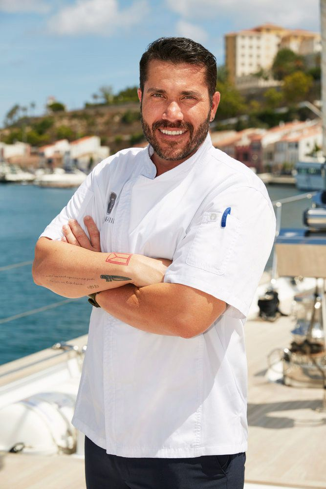
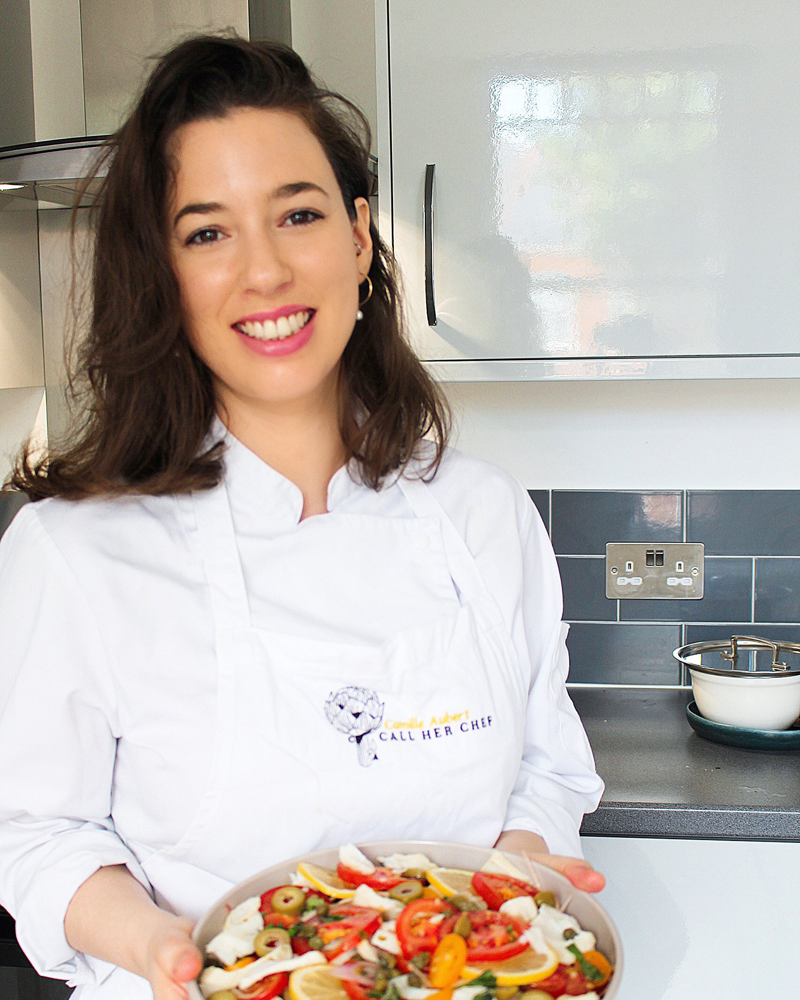
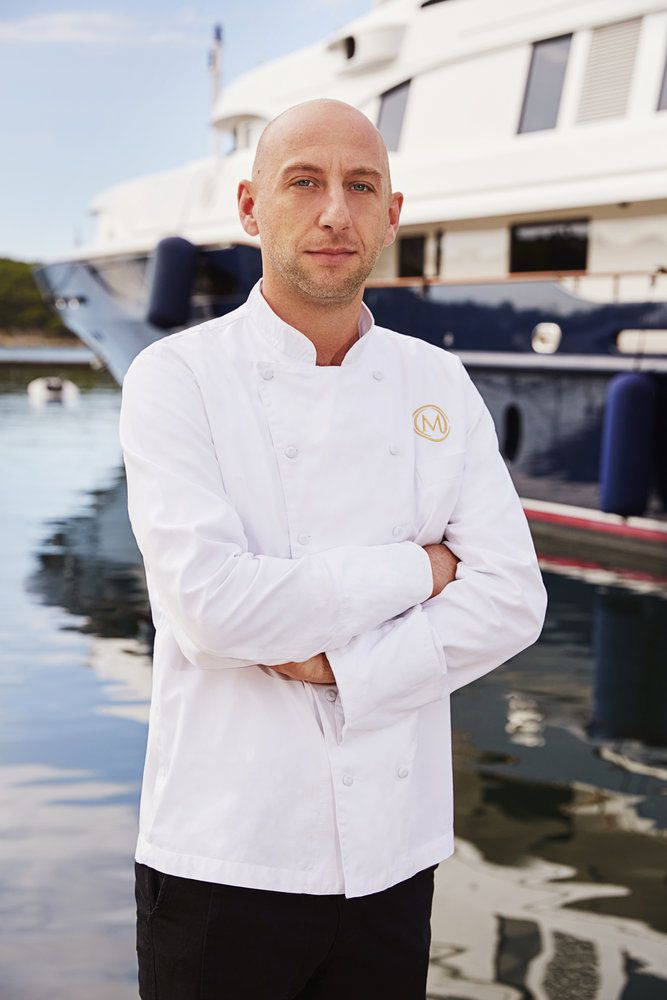

About Us

John Smith
Head Chef
John is a professionally trained chef with over 10 years of experience in Mediterranean cuisine. His passion for cooking began at a young age, and he loves nothing more than creating delicious dishes using fresh, locally-sourced ingredients.
- Winner of the 2018 International Chef's Challenge
- Featured in numerous cooking magazines and TV shows
- Regularly hosts cooking classes and workshops

Maria Rodriguez
Pastry Chef
Maria is a talented pastry chef with a passion for creating beautiful and delicious desserts. She has trained in some of the best pastry kitchens in Europe, and her desserts are always a hit with our customers.
- Winner of the 2019 World Pastry Championship
- Author of the bestselling cookbook "Sweet Treats"
- Regularly creates custom desserts for special events and weddings

Ali Hassan
Sous Chef
Ali is a creative and talented sous chef who has been working in the restaurant industry for over 5 years. He specializes in creating unique flavor combinations that are both delicious and surprising.
- Trained in some of the best restaurants in the Middle East
- Known for his innovative use of spices and herbs
- Regularly creates new dishes for our menu